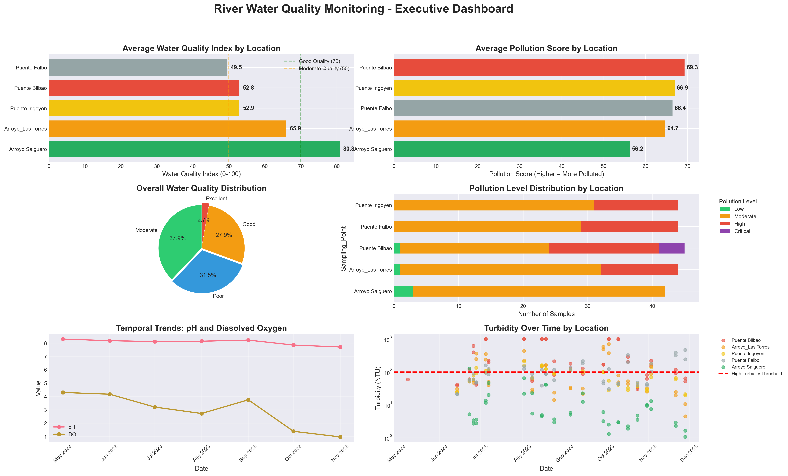
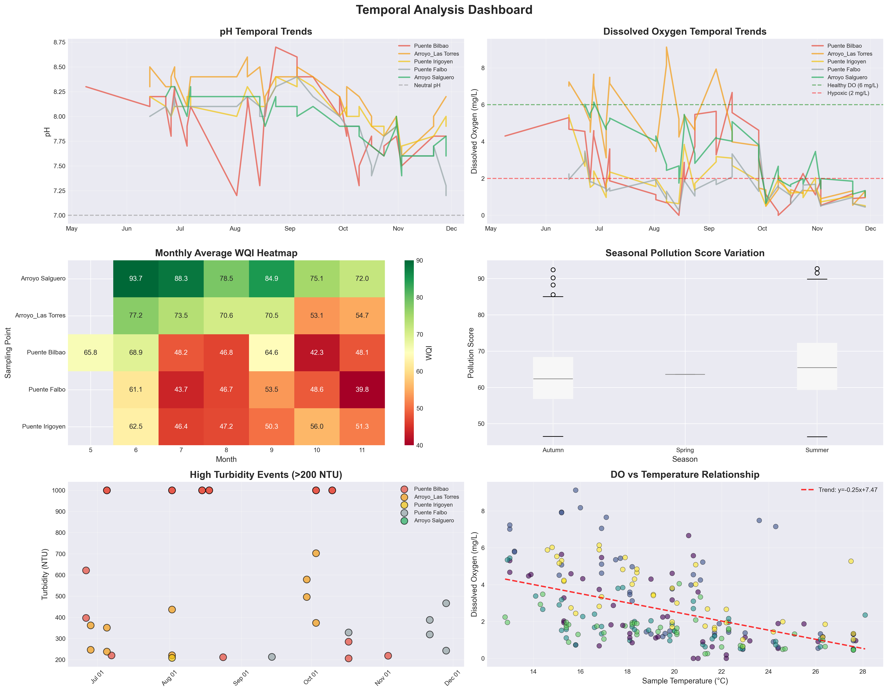
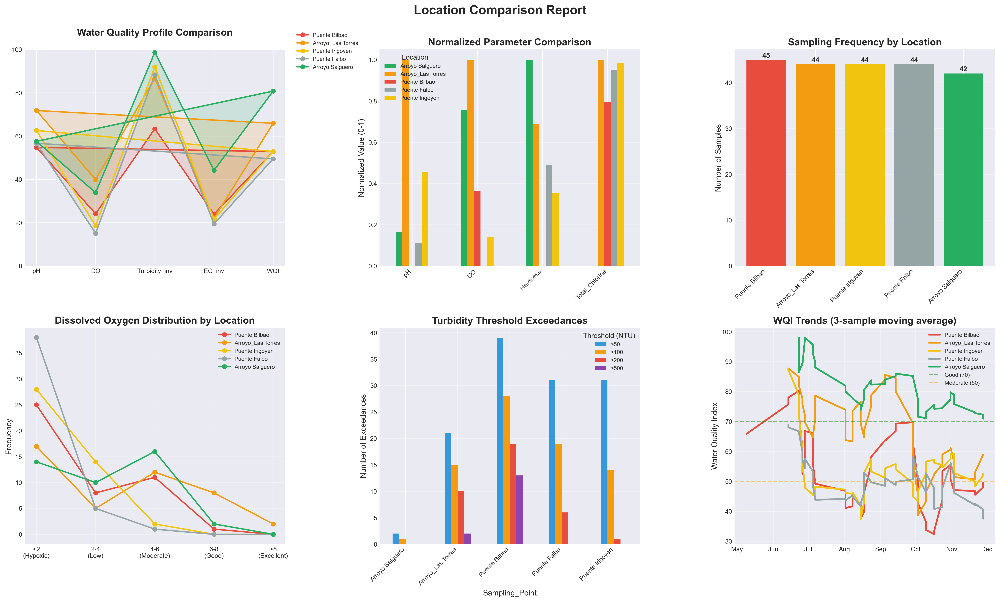
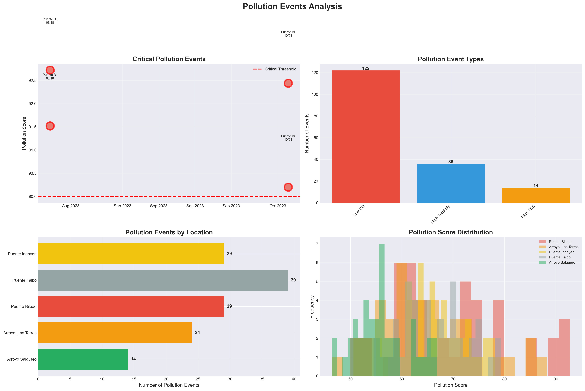
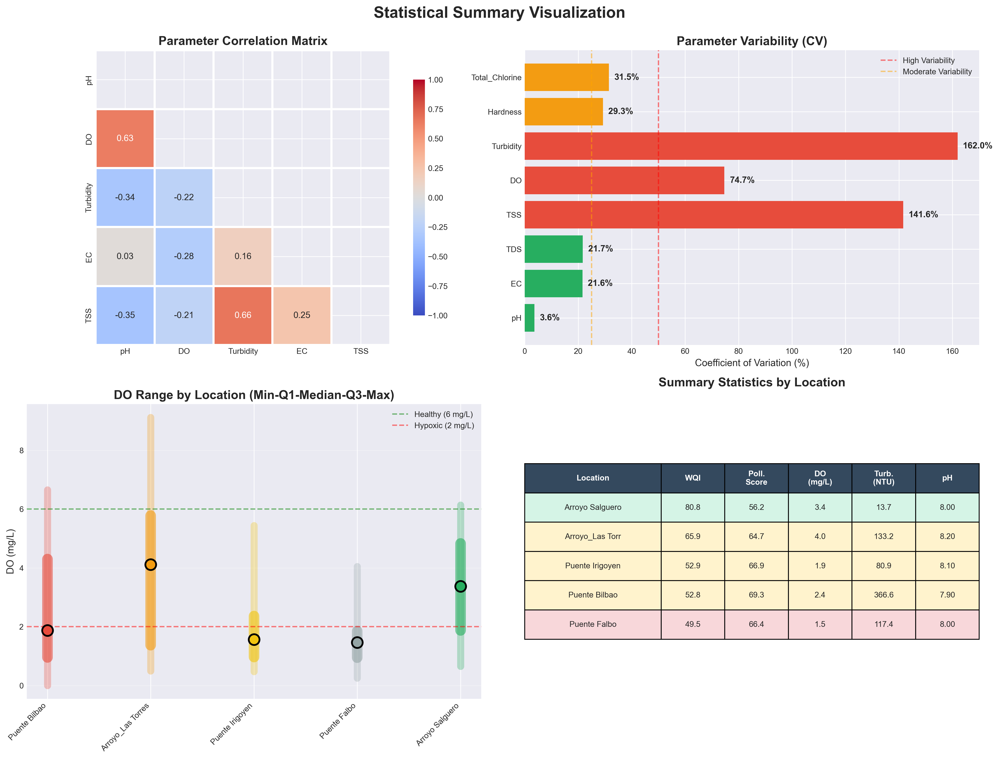

🌊 River Water Quality Monitoring Report
Report Date: November 12, 2025
Monitoring Period: May 09, 2023 - November 28, 2023
Total Samples: 219 | Sampling Locations: 5
📊 Key Performance Indicators
📍 Location-Specific Analysis
Arroyo Salguero
Status: Good Quality | WQI: 80.8/100
DO: 3.39 mg/L | pH: 7.98 | Turbidity: 13.7 NTU | Pollution Score: 56.2
Arroyo_Las Torres
Status: Moderate Quality | WQI: 65.9/100
DO: 3.99 mg/L | pH: 8.22 | Turbidity: 133.2 NTU | Pollution Score: 64.7
Puente Irigoyen
Status: Moderate Quality | WQI: 52.9/100
DO: 1.85 mg/L | pH: 8.06 | Turbidity: 80.9 NTU | Pollution Score: 66.9
Puente Bilbao
Status: Moderate Quality | WQI: 52.8/100
DO: 2.41 mg/L | pH: 7.93 | Turbidity: 366.6 NTU | Pollution Score: 69.3
Puente Falbo
Status: Poor Quality | WQI: 49.5/100
DO: 1.51 mg/L | pH: 7.96 | Turbidity: 117.4 NTU | Pollution Score: 66.4
⚠️ Critical Findings
📈 Visualizations
Executive Dashboard
Temporal Analysis
Location Comparison
Parameter Details

Pollution Events
Statistical Summary
📋 Detailed Statistics
| Location | WQI | Pollution Score | DO (mg/L) | pH | Turbidity (NTU) | Samples |
|---|---|---|---|---|---|---|
| Arroyo Salguero | 80.8 | 56.2 | 3.39 | 7.98 | 13.7 | 42 |
| Arroyo_Las Torres | 65.9 | 64.7 | 3.99 | 8.22 | 133.2 | 44 |
| Puente Irigoyen | 52.9 | 66.9 | 1.85 | 8.06 | 80.9 | 44 |
| Puente Bilbao | 52.8 | 69.3 | 2.41 | 7.93 | 366.6 | 45 |
| Puente Falbo | 49.5 | 66.4 | 1.51 | 7.96 | 117.4 | 44 |
💡 Recommendations
- Immediate Action: Investigate pollution sources at Puente Bilbao (worst water quality)
- Enhanced Monitoring: Increase sampling frequency during high-risk periods
- Pollution Control: Implement targeted measures to reduce turbidity and improve dissolved oxygen
- Long-term Strategy: Develop watershed management plan focusing on identified hotspots
- Stakeholder Engagement: Coordinate with upstream industrial/agricultural operators
📊 Data Quality Notes
- Total samples analyzed: 219
- Sampling period: 203 days
- Parameters monitored: pH, EC, TDS, TSS, DO, Turbidity, Hardness, Total Chlorine
- All statistical tests performed at α = 0.05 significance level
- Non-parametric methods used due to non-normal distributions